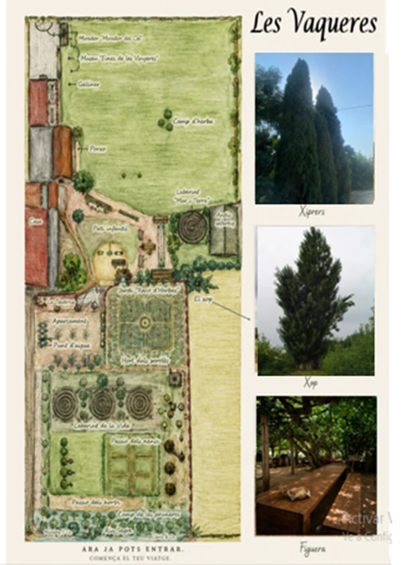

杨树是垂直的： 它向上生长，守望，与天空相连。

水的象征，生命的象征。


我们生活在一个走得太快的世界。有时，为了写完那本书、筹备一个大项目、不受打扰地学习，或者只是重新找回自己，我们需要的只是时间和安静。
Amics de la Natura 协会敞开一处为专注与身心安宁而设的地方，就在大自然之中。五套舒适的独立公寓（其中一套完全无障碍），坐落在莱里达奥尔塔宁静的风景里，西边的光线和土地的节奏在这里定下节拍。
无论您是寻找灵感的艺术家、正在备考、在写一个故事的开头几页，还是只需要几天的平静和放空，这里都是您的地方。
一个休息的地方。让心灵喘口气。一个有大自然陪伴的地方。

就像古老的中世纪道路一样，柏树标示着对 Les Vaqueres 的欢迎。三棵在入口处并排而立，第四棵稍远一些，同样高大，强化了迎客与款待的古老象征：一个安宁的屋顶、餐桌上的一盘饭菜和旅途中的安全庇护。
再往上，矗立着我们的智慧杨树：它不是最高的，却是加泰罗尼亚最大、最古老的一棵——按离地一米三十五处的树干测量，这一点已由马蒂·博阿达本人确认。它是奥尔塔的长者，是守护这片土地安宁的沉默而智慧的守望者。
在房屋的庇护下，百年无花果树在等着我们。如果说杨树以它的高大和记忆守护着这里，那么无花果树则在近处迎接：它有一条长凳，门朝共用厨房敞开，提供一片亲密的树荫，让谈话流淌，让时间停驻。
杨树和无花果树是两种面对世界、互相补充的姿态。
杨树是垂直的： 它向上生长，守望，与天空相连。
水的象征，生命的象征。
无花果树是水平的： 它张开双臂，投下树荫，邀请你坐下。

丰饶、富足与智慧的象征。
这里有一种延续。
它们彼此补充。几乎就是一个故事。